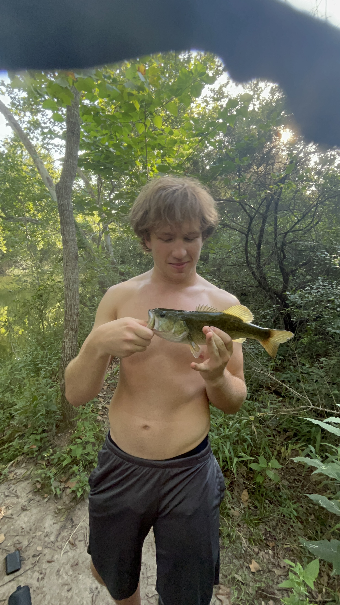

Catch of the Month!

Submit Your CatchAbout Fish Finder
Fish Finder is a community site for anglers to share their best catches, find good fishing spots, and finding a community of like minded anglers. I created it because finding reliable information about local fishing spots can be hard. Also fishing in new places can lead to isolation since fishing is a very isolating hobby. This site lets you browse a map of fishing locations, join discussions, checking out upcoming fishing events, and enter your catches for a chance of winning catch of the month.